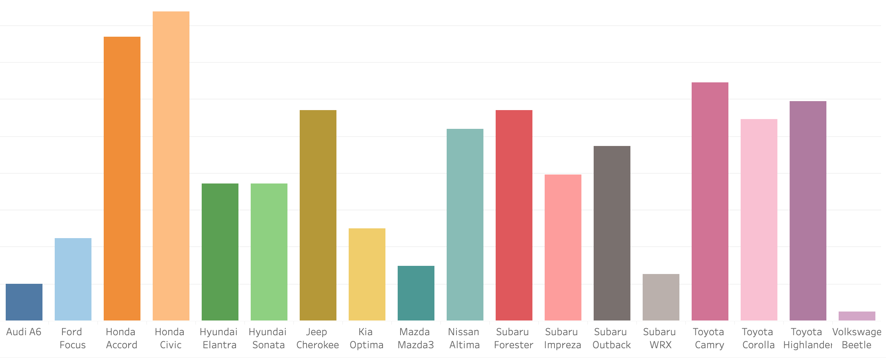
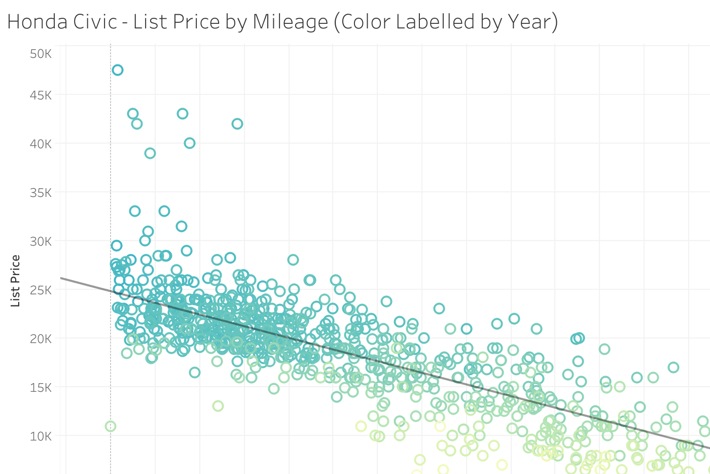

All my projects links are available below. Click any of following descriptions to see the full project.
Click button(s) below to filter projects by category.
Medium Article
Setting up automated cryptocurrency price alerts based on Technical Analysis indicators and trends.
Medium Article
A brief introduction to cryptocurrency mining as an investment vehicle and how it can be used to hedge market risk.
Visualization
Data exploratory visualizations of local used car data gathered from Carfax.
Medium
Analyzing the local used car market by scraping data from the popular used car listing website: Carfax.
Medium
Extracting keyword-specific Twitter data, analyzing the tweets using Natural Language Processing (NLP), and building a simple stock trading strategy.